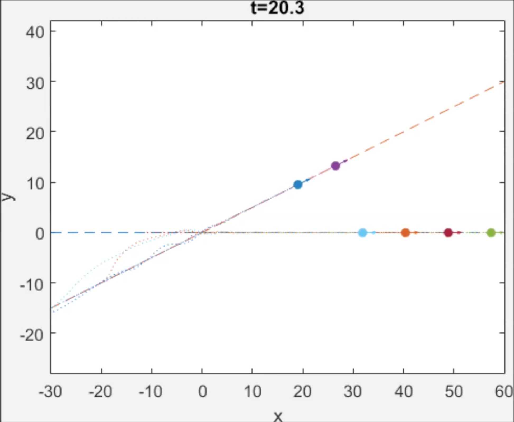
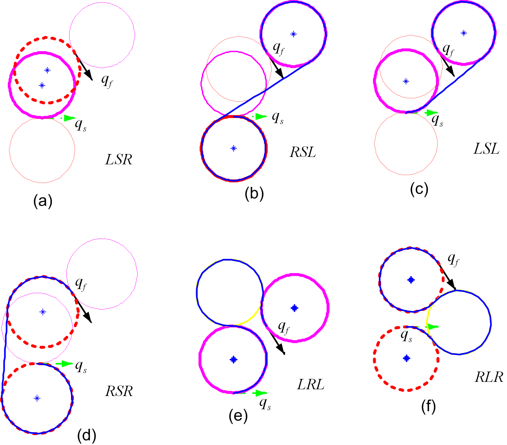
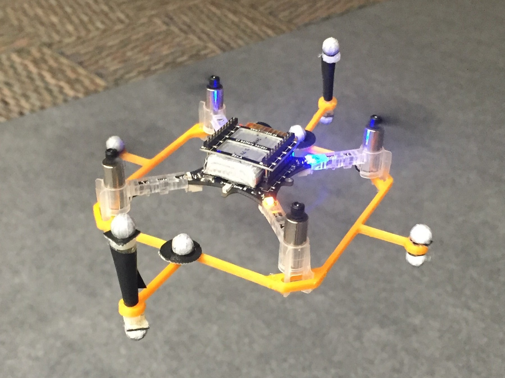

Current Research
UAV Traffic Management (UTM) - UC Berkeley [02/16 - Present]
A collaboration with Mo Chen.

Many companies and groups are proposing projects like
Amazon Prime Air and Google[x]'s
Project Wing to use UAVs to provide civilian services.
To prepare for these ideas, we need to
implement UAV traffic management (UTM) systems to ensure
guarantees for these drones, such as safety and timeliness. The algorithms used to compute
control that guarantee safety or timeliness are computationally intractable
for large multi-agent systems, so several structural assumptions have been
proposed to make these computations tractable, one of which is platooning.
I am working on a hardware implementation of platooning as a proof of concept.
Faster HJ-based Algorithms - UC Berkeley [03/16 - Present]
A collaboration with Glen Chou and Mo Chen.

Hamilton-Jacobi reachability is a formulation that allows us
to generate controls with certain guarantees, such as liveness and safety,
for systems, independent of their linearity. However, the dynamic program
underlying computing reachable sets has a running time complexity that
grows exponentially with the number of states of a system. Several methods
are used to approximate these reachable sets in order to avoid this slow
computation, but these methods cannot always deliver our desired
guarantees. We are working on a technique that will more efficiently
compute reachable sets and maintain the same guarantees that vanilla
HJ-based algorithms provide.
Learning Quadrotor Dynamics with Neural Networks - UC Berkeley [02/16 - Present]
A collaboration with Somil Bansal and Kene Akamatelu.

Models for
quadrotor dynamics are well-established
and can be used for generating good control. However, in general, controllers
for quadrotors are derived from a linearization of the dynamics, which
means that there are phenomenon that are purposely not accounted for in
order to achieve a linear model for deriving control. This project aims
to utilize neural nets to learn a higher fidelity model that includes
previously unmodeled phenomenon in hopes to generate better control.
Crazyflie 2.0 Testbed- UC Berkeley [11/15 - Present]
 This is a collaborative effort between all members of Hybrid
Systems Laboratory who work on quadrotors. The goal of this project
is to set up a framework for using
Bitcraze's Crazyflie 2.0 to run control and robotics experiments on.
Since the Crazyflie 2.0's are cheap, small, easily reparable, robust to
impacts and open
source, they are an ideal experiment platform.
This is a collaborative effort between all members of Hybrid
Systems Laboratory who work on quadrotors. The goal of this project
is to set up a framework for using
Bitcraze's Crazyflie 2.0 to run control and robotics experiments on.
Since the Crazyflie 2.0's are cheap, small, easily reparable, robust to
impacts and open
source, they are an ideal experiment platform.
I maintain a [youtube channel] for all of my research videos.
Past Research
TRACER - UCSF [03/15 - 08/15]
Though my research focus is no longer on bioinformatics, feel free
to discuss it with me, as I still find the field interesting.